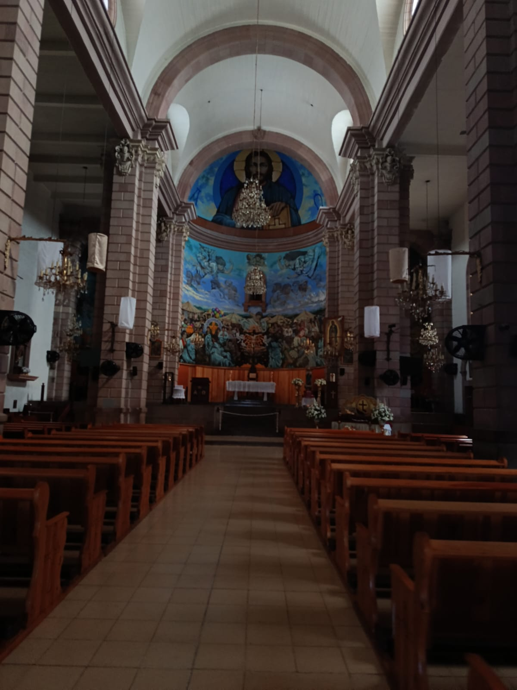
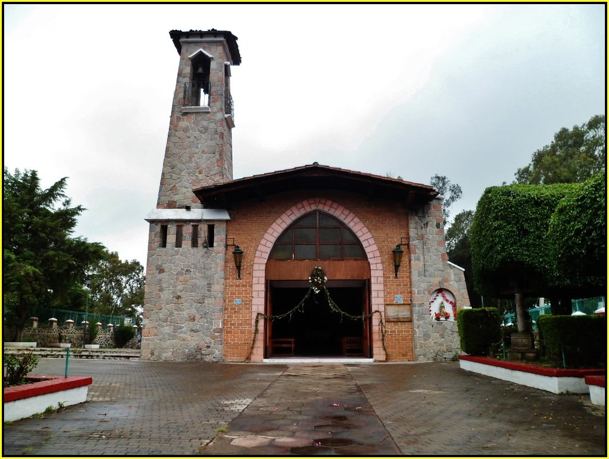
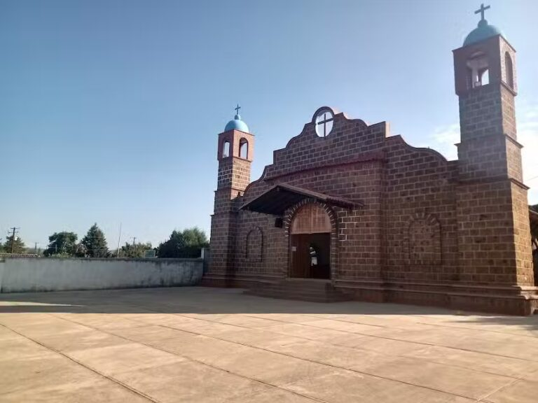

El Templo de Santa María Ahuacatlán, mejor conocido popularmente como el Santuario del Cristo Negro, no es solo una de las iglesias en Valle de Bravo; es un pilar espiritual y un punto de atracción ineludible para visitantes y fieles. Con una calificación promedio de 4.7 estrellas basada en más de dos mil opiniones, este recinto se ha consolidado como un lugar de profunda devoción y notable interés histórico. Su ambiente, descrito por muchos como tranquilo y perfecto para la reflexión, lo convierte en una parada esencial para comprender el alma de este pueblo mágico. .

La Parroquia de San Francisco de Asís es un ejemplo destacado de la rica historia y arquitectura religiosa de Valle de Bravo. Esta iglesia, ubicada en el centro del pueblo, es un lugar de gran importancia tanto para la comunidad local como para los visitantes. Su construcción, que comenzó alrededor de 1880, incluye elementos de su pasado franciscano y una torre que data del siglo XVI. La fachada de la iglesia es de un color blanco y rojo, con torres de campanario de cantera y un cuerpo central neoclásico.

La capilla más destacada en Valle de Bravo es la Capilla de Guadalupe, ubicada en Calle Independencia, Manzana 016, Centro, 51200 Valle de Bravo, Estado de México, reconocida por su valor histórico, su arquitectura tradicional y su festividad del 12 de diciembre..

La Parroquia Inmaculada Cerro Colorado se presenta como un punto de referencia espiritual y comunitario en Valle de Bravo. A través de las opiniones de sus visitantes y la información disponible, se puede construir un panorama detallado de lo que los fieles y turistas pueden esperar al acercarse a este recinto. La experiencia general, calificada con una notable puntuación de 4.9 sobre 5, sugiere un alto grado de satisfacción, pero un análisis más profundo revela matices importantes que merecen ser considerados..